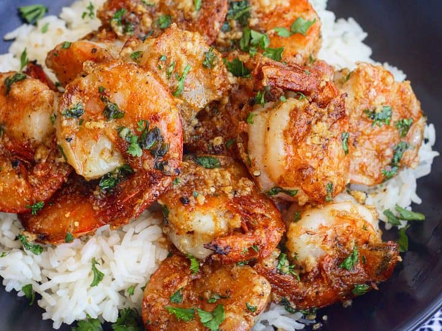

Hawaiian Garlic Shrimp

Description
Juicy prawns cooked in a garlicky buttery sauce, just like the ones you would find served from the shrimp trucks in Hawaii.
Ingredients
- 1 pound of jumbo shrimp with shell on (cleaned and deveined)
- 2 1/2 tablespoons of all purpose flour
- 2 teaspoons paprika
- 1 1/2 teaspoons sea salt
- 1 teaspoon black pepper
- 18 large garlic cloves minced
- 2 tablespoons extra virgin olive oil, divided
- 1 stick unsalted butter
- Fresh chopped parsley (optional for garnish)
Steps
- Melt the butter and one tablespoon of olive oil on medium heat in a large pan. Once the butter has melted, add the chopped garlic to the melted butter & oil, and cook for 2 to 3 minutes until you see the garlic has turned light brown. TAKE CARE TO NOT BURN THE GARLIC!
- Remove the garlic sauce from the pan and set aside.
- Place the flour, paprika, salt, and black pepper in a large resealable bag. Add the shrimp to the bag and coat the shrimp with the flour mixture. Make sure all the shrimp is coated evenly. Set the shrimp aside.
- Add the second tablespoon of olive oil to the pan. Once heated, add your shrimp to the pan.
- Cook the shrimp over medium high heat for 2 to 3 minutes on each side. You may need to cook the shrimp in batches to avoid overcrowding the pan.
- Once you have cooked the last batch of shrimp, add all the shrimp back to the pan and pour over the garlic sauce. Stir to combine and garnish with parsley.
- Serve Hawaiian Style with sticky white rice and macaroni salad!